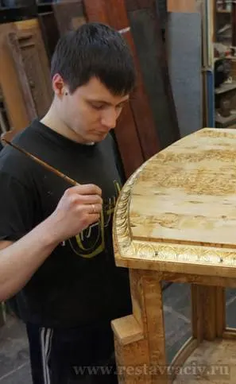
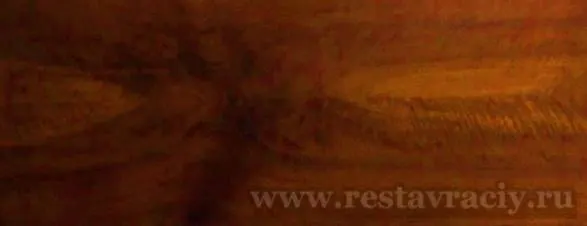
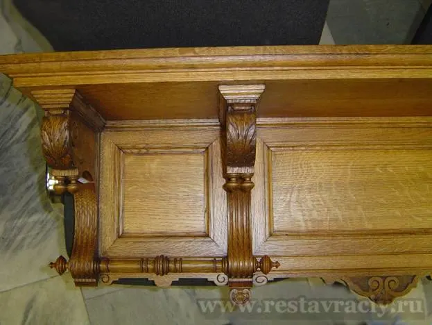
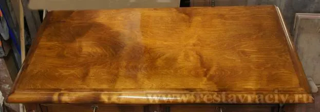
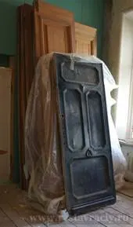
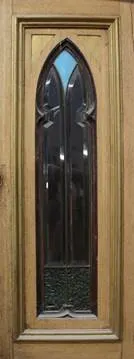
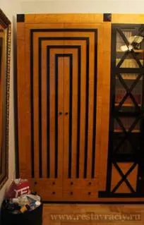

Услуги
Изготовление мебели из массива дерева
Мастерская реставрации мебели предлагает услуги: изготовление мебели из массива дерева, реплики мебели дизайнерской, старинной, мягкой, а также реставрацию авторской мебели.


О чём рассказывает мастерская
- Какой массив дерева лучше
- Массив сосны или берёзы, что лучше?
- Какой массив выбрать
- Массив или МДФ, что лучше
- Заказать межкомнатные двери нестандартные
- Заказать филёнчатые двери
- Филёнка двери
- Застеклённые двери
- Двери со стеклянным вставками
- Двери из карельской берёзы
В материале мастерской
Фотографии и детали



Открыть снимок у мастерской


Открыть снимок у мастерской


Открыть снимок у мастерской


Открыть снимок у мастерской


Открыть снимок у мастерской


Открыть снимок у мастерской
Есть похожая вещь?
Подберите ракурсы для предварительной оценки.